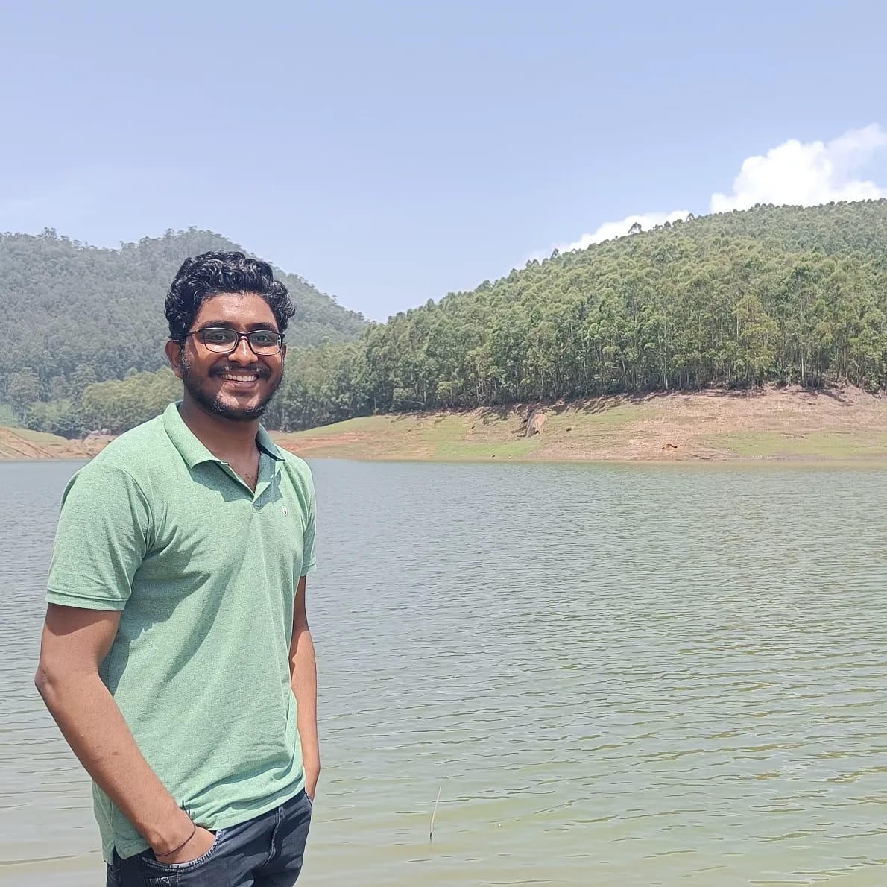

Welcome to My Personal Website
Hi, I'm Alok. I'm a Computer Science professional with around 4 years of experience in the relevant field.
Hi, I'm Alok. I'm a Computer Science professional with around 4 years of experience in the relevant field.